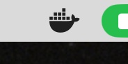

Docker is a virtualization engine that allows us to run tools in containers
This lets us safely run a standardized operating system on our machines without having to replace our operating system
This prevents “works on my machine” problems and ensures your code runs the same way in the grading environment
samogden/cst334)We use a docker image named samogden/cst334
It contains all the tools we use and I use it for grading, so you can test in the same environment
Note: Before installing make sure you backup important data!
To run docker you need generally need to open Docker Desktop

The best way to test your installation is to run docker run hello-world in your terminal1
$ docker run hello-world
Unable to find image 'hello-world:latest' locally
latest: Pulling from library/hello-world
198f93fd5094: Pull complete
95ce02e4a4f1: Download complete
Digest: sha256:85404b3c53951c3ff5d40de0972b1bb21fafa2e8daa235355baf44f33db9dbdd
Status: Downloaded newer image for hello-world:latest
Hello from Docker!
This message shows that your installation appears to be working correctly.
To generate this message, Docker took the following steps:
1. The Docker client contacted the Docker daemon.
2. The Docker daemon pulled the "hello-world" image from the Docker Hub.
(arm64v8)
3. The Docker daemon created a new container from that image which runs the
executable that produces the output you are currently reading.
4. The Docker daemon streamed that output to the Docker client, which sent it
to your terminal.
To try something more ambitious, you can run an Ubuntu container with:
$ docker run -it ubuntu bash
Share images, automate workflows, and more with a free Docker ID:
https://hub.docker.com/
For more examples and ideas, visit:
https://docs.docker.com/get-started/Note: The $ at the very beginning of the above indicates that I was typing a command into terminal
Before you run the docker command for class make sure you are not in your home directory!
You should open terminal and type in something like cd Documents to change to the documents folder.
The command we use in class is:
This command has a few parts we’ll go over in the next slide
[^]: Note for Windows users: ${PWD} works in PowerShell. If you have issues, try ${pwd} (lowercase).
docker : this invokes the docker programrun : this tells the docker program you want to start a container from an imagesamogden/cst334 : the name of the docker image we are using in class-it : run this container interactively (i.e. so we can type commands into it)--rm : tells docker to delete the container after we are no longer interacting with it-v ${PWD}:/tmp/hw : this tells docker to make the current directory available inside docker at the path /tmp/hw
${PWD} will be evaluated by the terminal to point to the current directory.What this looks like
Note: You might see more between these two lines, particularly notes about downloading layers, which are due to docker having to download the image
Once inside Docker, navigate to your mounted directory:
All your files from the host machine are available at /tmp/hw
Every so often I push updates to docker images, usually for Quality of Life (QoL) additions.
You can update your docker image with:
To exit docker you can either type in exit, press control-d or simply close the terminal.
Note that when you exit docker the container itself is lost, but your data should still in the folder you started in (thanks to the -v flag discussed earlier).
Putting it all together:
# On your host machine - navigate to your course directory
$ cd ~/Documents/CST334/labs/1-debugging_with_gdb
# Start Docker with current directory mounted
$ docker run -it --rm -v ${PWD}:/tmp/hw samogden/cst334
# Inside Docker - navigate to mounted directory
[DOCKER] /tmp/ $ cd /tmp/hw
# Build and test your code
[DOCKER] /tmp/hw $ make
[DOCKER] /tmp/hw $ make grade
# Exit when done
[DOCKER] /tmp/hw $ exit
$Docker daemon is not running - Make sure Docker Desktop is open and running (look for the whale icon)
Permission denied (Linux) - You may need to add your user to the docker group: sudo usermod -aG docker $USER - Log out and back in for changes to take effect
Cannot connect to Docker daemon (Mac) - Restart Docker Desktop from Applications
Files not showing up in /tmp/hw - Make sure you’re running the docker command from the correct directory - Check that you included the -v ${PWD}:/tmp/hw flag